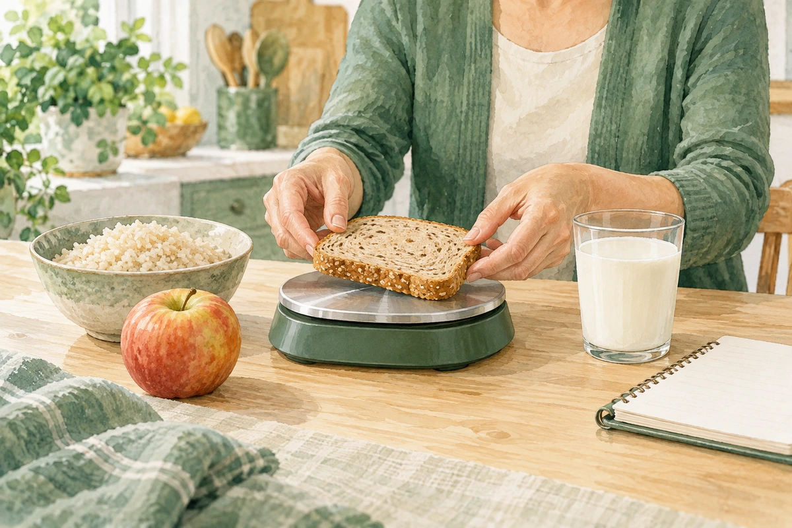
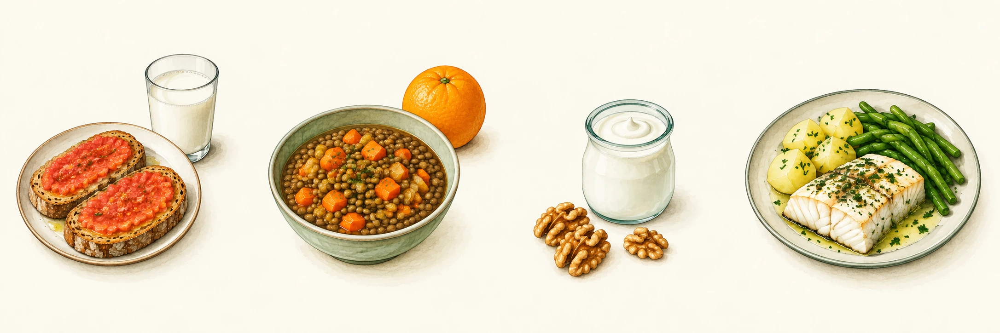

SITUACIONES ESPECIALES
Diabetes
Contar hidratos sin complicarte. Raciones, etiquetas y tablas para comparar alimentos.

Diabetes: empieza por aquí
La diabetes hace que la glucosa, el azúcar de la sangre, pueda subir demasiado. En el tipo 1 falta insulina; en el tipo 2 el cuerpo la utiliza peor y puede producir menos. La comida es una parte del cuidado, junto al tratamiento y el movimiento.
¿Dónde hay hidratos?
En pan, arroz, pasta, patata, legumbres, fruta, leche y yogur. También en azúcar, dulces y muchas bebidas. Las verduras aportan cantidades variables, normalmente pequeñas en porciones habituales. Rebozados, salsas y productos preparados pueden sumar hidratos.
No necesitas productos especiales “para diabéticos”. Si contar te resulta difícil, pide aprender con fotos, medidas caseras y tres o cuatro alimentos que suelas comer. El método del plato puede ser otra ayuda.
Cuenta una ración en 3 pasos
1. Busca el alimento correcto
Comprueba si la tabla habla de alimento crudo, hervido o en conserva. Al cocer, cambia el agua y el peso. Pesar 100 g de arroz crudo no equivale a 100 g de arroz cocinado.
2. Pesa lo que vas a comer
Usa gramos de la parte que comes: fruta sin piel no comestible ni hueso; conservas escurridas. Para leche y bebidas, mide mililitros. Al principio una báscula ayuda; después puedes reconocer tu vaso o tu plato.
3. Divide entre el peso de una ración
| Cantidad de pan blanco | Raciones de HC |
|---|---|
| 20 g | 1 ración |
| 40 g | 2 raciones |
| 60 g | 3 raciones |
Esta cuenta sirve para conocer los hidratos. No sirve por sí sola para decidir una dosis de insulina. Tu equipo debe enseñarte tu pauta y cómo actuar con ejercicio, enfermedad o cambios de apetito.
Etiquetas y platos caseros
Lee “hidratos de carbono”
En etiquetas de España y la Unión Europea, utiliza el valor de hidratos de carbono. La línea “de los cuales azúcares” es solo una parte; no la sumes otra vez. Tampoco restes la fibra por tu cuenta. “Sin azúcar añadido” no significa sin hidratos.
| Etiqueta de ejemplo, por 100 g | Cantidad |
|---|---|
| Hidratos de carbono | 60 g |
| De los cuales azúcares | 5 g |
| Fibra | 8 g |
Un guiso para varias personas
Suma los hidratos de los ingredientes que los aportan y divide entre porciones iguales. Ejemplo de práctica: 80 g de pasta seca de la tabla = 80 ÷ 14 = 5,71 raciones. Si se reparte en dos porciones iguales, la pasta aporta 2,86 raciones por porción. Añade lo que aporten tomate, otras verduras o salsas.
Si usas una medida casera
Pesa tu rebanada o tu cucharón varias veces. Anota cuánto suele contener. “Un plato” cambia mucho según el recipiente y cuánto lo llenes.
Índice y carga glucémica
El índice glucémico (IG) compara la respuesta de glucosa de alimentos con una misma cantidad de hidratos disponibles. El valor de referencia de la glucosa es 100. No es el porcentaje de azúcar de un alimento.
| Índice glucémico | Categoría |
|---|---|
| 55 o menos | Bajo |
| 56 a 69 | Medio |
| 70 o más | Alto |
La carga glucémica (CG) añade la cantidad que comes: IG × gramos de HC de la porción ÷ 100. La misma fruta tendrá más carga si comes más cantidad. CG baja: hasta 10; media: más de 10 y menos de 20; alta: 20 o más.
| Porción de ejemplo | HC | IG | CG |
|---|---|---|---|
| Sandía, 200 g | 10 g | 75 | 7,5 |
| Pan integral, 46 g | 20 g | 40 | 8 |
| Pan blanco, 40 g | 20 g | 70 | 14 |
La sandía tiene IG alto y, en esa cantidad, CG baja. Esto no la convierte en un alimento prohibido. Pan integral y blanco aportan los mismos HC en estas porciones, pero difieren en IG y fibra.
Madurez, variedad, marca, cocción y el resto de la comida cambian la respuesta. La CG es orientativa: no predice tu lectura del sensor ni sirve para calcular insulina. No hace falta calcularla en cada comida.
Cereales, pan y pasta
Elige el alimento y su preparación. Mira el peso de 1 ración y compara las porciones de ejemplo. Raciones y CG calculadas para la cantidad indicada.
| Alimento | 10 g HC | Porción | Raciones | IG | CG |
|---|---|---|---|---|---|
| Arroz blanco, crudo | 13 g | 26 g | 2 | ND | ND |
| Arroz blanco, hervido | 38 g | 114 g | 3 | 70 | 21 |
| Arroz integral, crudo | 13 g | 26 g | 2 | ND | ND |
| Arroz integral, hervido | 40 g | 120 g | 3 | 50 | 15 |
| Avena, cruda | 15 g | 30 g | 2 | ND | ND |
| Avena, hervida | 34 g | 68 g | 2 | 40 | 8 |
| Pan blanco de trigo | 20 g | 40 g | 2 | 70 | 14 |
| Pan integral | 23 g | 46 g | 2 | 40 | 8 |
| Pan de centeno | 20 g | 40 g | 2 | 65 | 13 |
| Pan de molde | 20 g | 40 g | 2 | 85 | 17 |
| Pasta, cruda | 14 g | 42 g | 3 | ND | ND |
| Pasta, hervida | 45 g | 135 g | 3 | 50 | 15 |
| Pasta integral, cruda | 15 g | 45 g | 3 | ND | ND |
| Pasta integral, hervida | 45 g | 135 g | 3 | 45 | 13,5 |
| Cuscús, crudo | 15 g | 30 g | 2 | ND | ND |
| Cuscús, cocido | 45 g | 90 g | 2 | 65 | 13 |
10 g HC = 1 ración. Porción: cantidad del ejemplo. La CG corresponde a esa porción.
ND: la fuente no aporta ese IG; no se calcula la CG. Las cantidades son aproximaciones y no son porciones recomendadas. Usa la etiqueta si está disponible. Se muestran dos decimales cuando hacen falta para evitar redondeos grandes.
Pasta y arroz: pesa en el estado indicado. El IG de una preparación cocinada no se traslada a la fila del alimento crudo.
Legumbres y tubérculos
Elige el alimento y su preparación. Mira el peso de 1 ración y compara las porciones de ejemplo. Raciones y CG calculadas para la cantidad indicada.
| Alimento | 10 g HC | Porción | Raciones | IG | CG |
|---|---|---|---|---|---|
| Lentejas, crudas | 20 g | 40 g | 2 | ND | ND |
| Lentejas, hervidas | 50 g | 100 g | 2 | 35 | 7 |
| Lentejas, en conserva | 70 g | 140 g | 2 | 35 | 7 |
| Garbanzos, crudos | 20 g | 40 g | 2 | ND | ND |
| Garbanzos, hervidos | 55 g | 110 g | 2 | 35 | 7 |
| Garbanzos, en conserva | 70 g | 140 g | 2 | 35 | 7 |
| Judías blancas, crudas | 25 g | 50 g | 2 | ND | ND |
| Judías blancas, hervidas | 55 g | 110 g | 2 | 35 | 7 |
| Judías blancas, en conserva | 70 g | 140 g | 2 | 35 | 7 |
| Guisantes | 100 g | 100 g | 1 | 35 | 3,5 |
| Patata, cruda | 65 g | 130 g | 2 | ND | ND |
| Patata, hervida | 65 g | 130 g | 2 | 65 | 13 |
| Patata, al horno | 35 g | 70 g | 2 | 62 | 12,4 |
| Boniato | 50 g | 100 g | 2 | 50 | 10 |
| Quinoa, cruda | 19 g | 38 g | 2 | ND | ND |
| Quinoa, hervida | 48 g | 96 g | 2 | 35 | 7 |
10 g HC = 1 ración. Porción: cantidad del ejemplo. La CG corresponde a esa porción.
ND: la fuente no aporta ese IG; no se calcula la CG. Las cantidades son aproximaciones y no son porciones recomendadas. Usa la etiqueta si está disponible. Se muestran dos decimales cuando hacen falta para evitar redondeos grandes.
Conservas: peso escurrido. La marca y la cocción pueden cambiar la composición. Boniato: denominación general de la fuente, sin preparación concreta; consulta la etiqueta o tabla de tu preparación.
Fruta: pesa la parte comestible
Elige el alimento y su preparación. Mira el peso de 1 ración y compara las porciones de ejemplo. Raciones y CG calculadas para la cantidad indicada.
| Alimento | 10 g HC | Porción | Raciones | IG | CG |
|---|---|---|---|---|---|
| Manzana | 100 g | 150 g | 1,5 | 35 | 5,25 |
| Pera | 100 g | 150 g | 1,5 | 30 | 4,5 |
| Naranja | 100 g | 150 g | 1,5 | 35 | 5,25 |
| Mandarina | 100 g | 100 g | 1 | 30 | 3 |
| Kiwi | 100 g | 100 g | 1 | 50 | 5 |
| Plátano | 50 g | 100 g | 2 | 50 | 10 |
| Uva | 50 g | 100 g | 2 | 45 | 9 |
| Fresones | 200 g | 200 g | 1 | 25 | 2,5 |
| Melón | 200 g | 200 g | 1 | 60 | 6 |
| Sandía | 200 g | 200 g | 1 | 75 | 7,5 |
| Piña | 100 g | 100 g | 1 | 45 | 4,5 |
| Mango | 100 g | 150 g | 1,5 | 50 | 7,5 |
| Melocotón | 100 g | 150 g | 1,5 | 35 | 5,25 |
| Ciruela | 100 g | 100 g | 1 | 35 | 3,5 |
| Cereza | 100 g | 100 g | 1 | 25 | 2,5 |
| Papaya | 125 g | 125 g | 1 | 55 | 5,5 |
10 g HC = 1 ración. Porción: cantidad del ejemplo. La CG corresponde a esa porción.
ND: la fuente no aporta ese IG; no se calcula la CG. Las cantidades son aproximaciones y no son porciones recomendadas. Usa la etiqueta si está disponible. Se muestran dos decimales cuando hacen falta para evitar redondeos grandes.
Fruta: peso sin partes no comestibles. Una “pieza” no tiene siempre el mismo tamaño. Puedes incluir plátano, uva y sandía ajustando su cantidad.
Lácteos, frutos secos y otros
Elige el alimento y su preparación. Mira el peso de 1 ración y compara las porciones de ejemplo. Raciones y CG calculadas para la cantidad indicada.
| Alimento | 10 g HC | Porción | Raciones | IG | CG |
|---|---|---|---|---|---|
| Leche desnatada | 200 ml | 200 ml | 1 | 32 | 3,2 |
| Leche semidesnatada | 200 ml | 200 ml | 1 | 30 | 3 |
| Leche entera | 200 ml | 200 ml | 1 | 27 | 2,7 |
| Yogur natural | 200 g | 125 g | 0,63 | 35 | 2,19 |
| Queso fresco | 250 g | 70 g | 0,28 | 35 | 0,98 |
| Almendra | 150 g | 30 g | 0,2 | 15 | 0,3 |
| Avellana | 150 g | 30 g | 0,2 | 15 | 0,3 |
| Nuez | 300 g | 30 g | 0,1 | 15 | 0,15 |
| Cacahuete | 100 g | 30 g | 0,3 | 15 | 0,45 |
| Pistacho | 80 g | 30 g | 0,38 | 15 | 0,56 |
| Uva pasa | 15 g | 30 g | 2 | 65 | 13 |
| Higo seco | 15 g | 30 g | 2 | 40 | 8 |
| Azúcar blanco | 10 g | 10 g | 1 | 70 | 7 |
| Miel | 13 g | 13 g | 1 | 85 | 8,5 |
| Zumo de fruta, natural | 100 ml | 200 ml | 2 | 60 | 12 |
| Refresco de cola con 10% HC | 100 ml | 200 ml | 2 | 70 | 14 |
10 g HC = 1 ración. Porción: cantidad del ejemplo. La CG corresponde a esa porción.
ND: la fuente no aporta ese IG; no se calcula la CG. Las cantidades son aproximaciones y no son porciones recomendadas. Usa la etiqueta si está disponible. Se muestran dos decimales cuando hacen falta para evitar redondeos grandes.
Leche y bebidas: la fuente usa g en la columna general y ml en sus medidas habituales; aquí se sigue esa equivalencia aproximada. Los IG de alimentos con muy pocos HC son menos útiles: no los uses para elegir frutos secos.
Qué comer y qué limitar
| Prioriza | Cómo llevarlo a tu plato |
|---|---|
| Verduras, legumbres y fruta entera | Varía; cuenta los HC de legumbres y fruta. |
| Pan y cereales integrales | Mejoran el aporte de fibra; también se cuentan. |
| Proteínas y grasas saludables | Pescado, huevos, tofu, carnes frescas, aceite de oliva y frutos secos. |
| Agua como bebida habitual | Leche y yogur natural también pueden encajar; cuenta sus HC. |
Deja para ocasiones
Refrescos azucarados, zumos, bollería y grandes porciones de dulces. La miel y el azúcar moreno también suben la glucosa. Los productos “sin azúcar” pueden contener almidón o grasas y no son de consumo libre.
¿Hay alimentos excluidos?
Por la diabetes sola no se excluyen automáticamente fruta, pan o legumbres. Sí se excluye lo que requieran una alergia o una enfermedad asociada. Si tomas insulina o medicación que puede producir bajadas, saltarte comidas puede ser peligroso: acuerda horarios y cantidades.
Intercambiar dos alimentos con los mismos HC ayuda a variar, pero no los hace iguales en fibra, proteína o grasa. La tabla no fija cuántas raciones necesitas.
Consejos para el día a día
• Haz una pequeña lista de tus cinco comidas más frecuentes y sus cantidades. Guárdala en papel si te resulta más cómodo.
• Fuera de casa, pide pan y salsas aparte y observa la porción de arroz, patata o pasta. Pregunta por ingredientes que no se ven.
• Con dosis fijas de insulina suele ayudar mantener horarios y cantidades de HC parecidos. Con pauta flexible, aplica solo el plan que te hayan enseñado.
• Camina o muévete según tus posibilidades. Si hay riesgo de bajadas, acuerda qué revisar antes y después. No hagas ayunos ni cambios bruscos sin adaptar el tratamiento.
Si tienes una bajada de azúcar
Si la glucosa está por debajo de 70 mg/dl y estás despierto y puedes tragar: toma 15 g de HC de absorción rápida, espera 15 minutos y vuelve a medir. Si sigue baja, repite. Ejemplo: tabletas de glucosa que sumen 15 g según su etiqueta. También 15 g de azúcar disueltos en agua.
Chocolate, frutos secos o fruta entera actúan más despacio y no son la primera opción. Tras recuperarte, sigue tu plan para la siguiente comida o tentempié. Algunos sistemas automáticos de insulina necesitan cantidades distintas: sigue tu pauta personal.
Lleva glucosa si tienes riesgo de bajadas. Consulta si se repiten. Vómitos, dolor abdominal, respiración extraña o somnolencia con glucosa alta necesitan valoración urgente, especialmente en diabetes tipo 1.
Menú semanal y fuentes
Ejemplos para practicar: 1 ración = 10 g de HC. Las cifras cuentan solo los alimentos pesados; no fijan lo que necesitas.

Las imágenes muestran ejemplos del lunes. Sigue los alimentos de la tabla para los otros días.